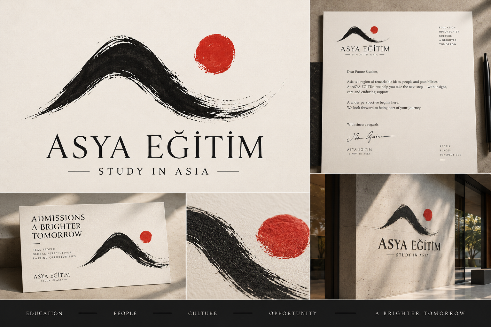
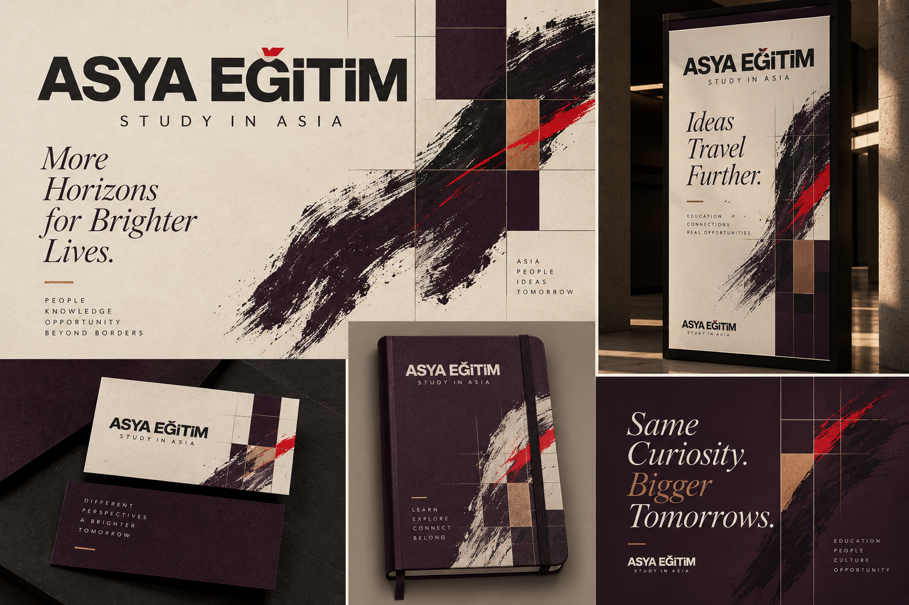
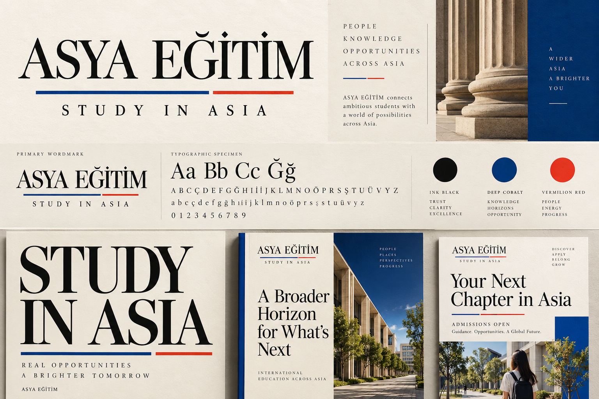
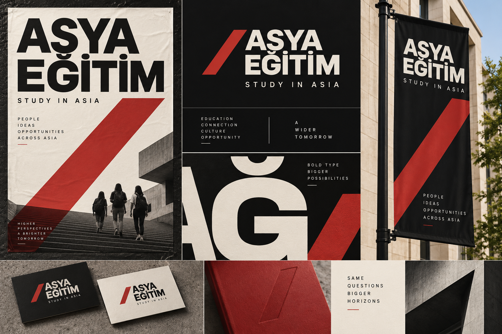
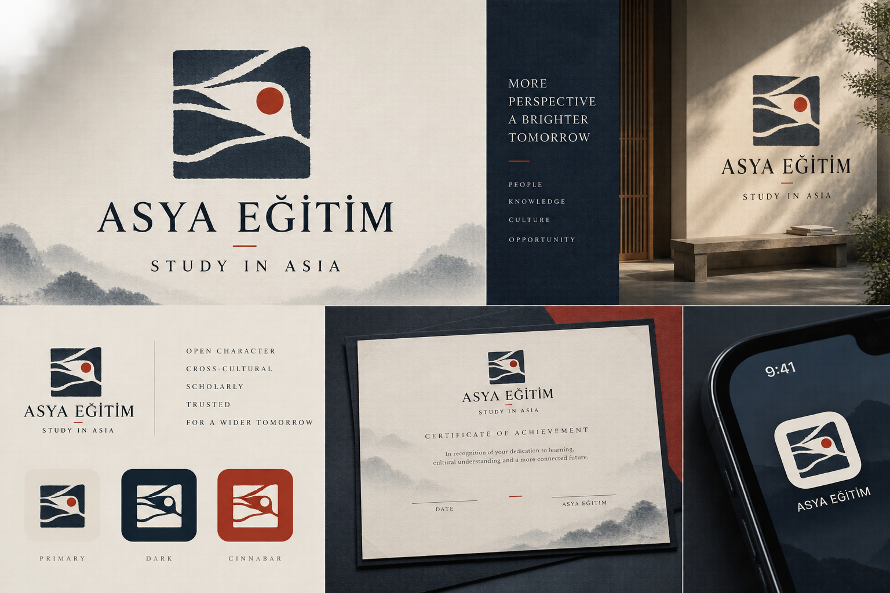
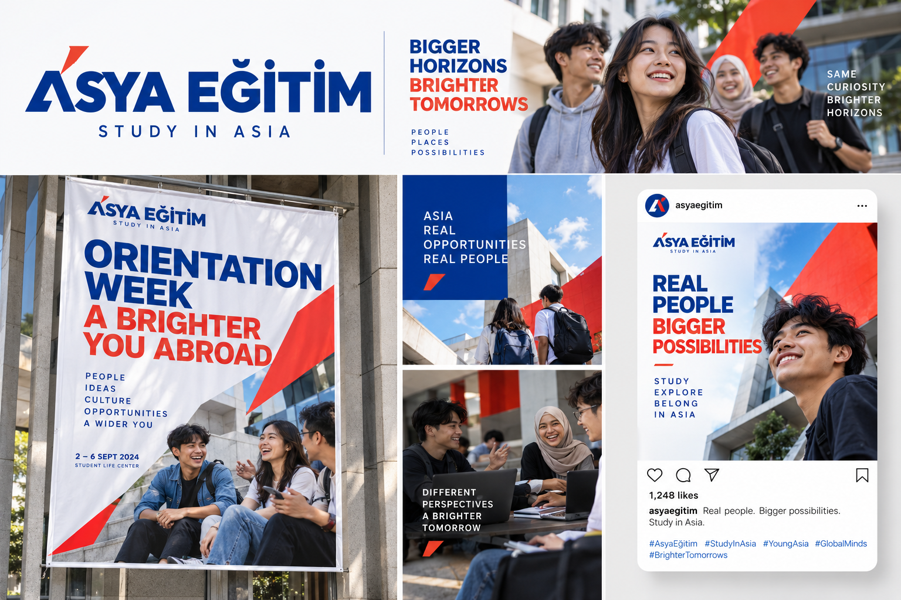
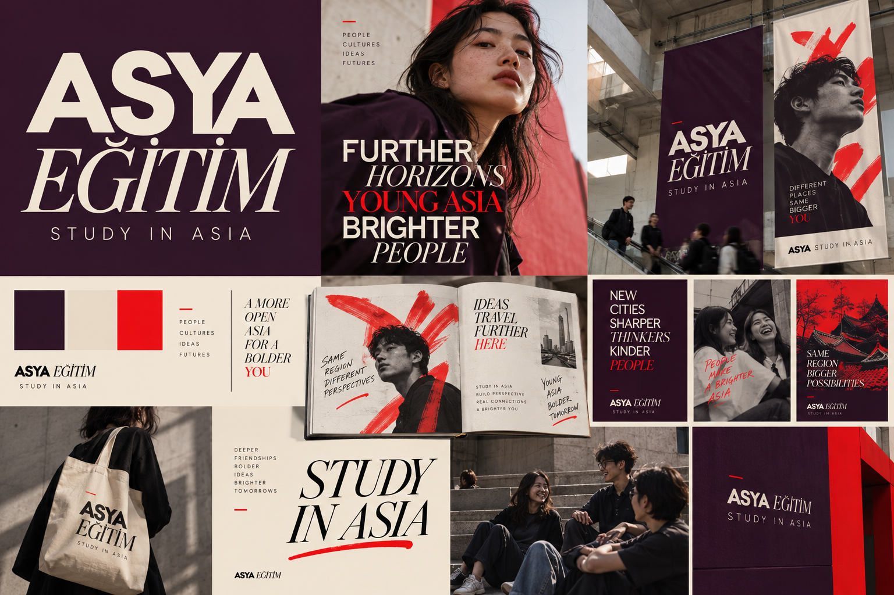

ASYA EĞİTİM · VISUAL ROUND 3 · 12 YÖN · SEÇİM BEKLENİYOR (sıralama yok, öneri yok)
Karşılaştırma — orijinal üretimler
02 ve 03 bu turda yok. Tüm görseller orijinal ChatGPT Image çıktılarıdır (1536×1024).
01 · Contemporary Ink — A | B

01A · restrained gestural

01B · graphic energetic
04 · Brush + Geometry — A | B

04A · subtle interaction

04B · bold collision
05 · Typographic Asia — A | B

05A · refined wordmark-first

05B · experimental structural
06 · Open Character — A | B

06A · restrained scholarly

06B · bold graphic
07 · Young Asia — A | B

07A · bright optimistic

07B · editorial art-school
08 · Future East — A | B

08A · minimal sharp

08B · expressive contemporary